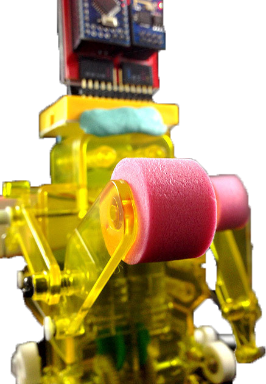
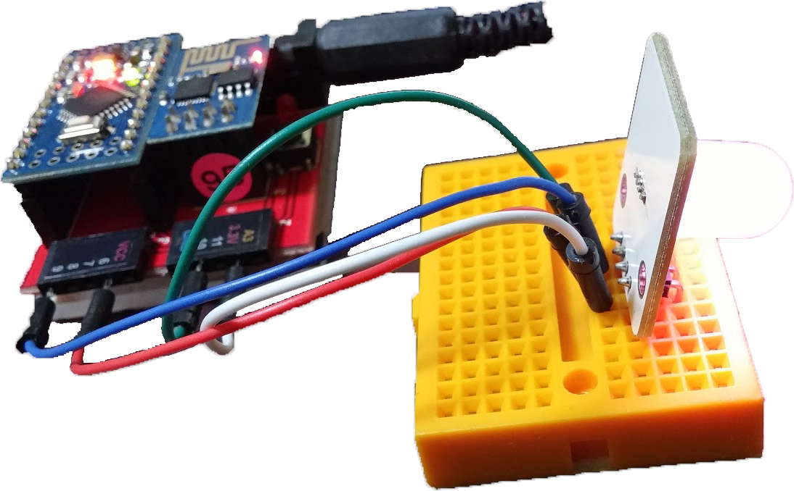
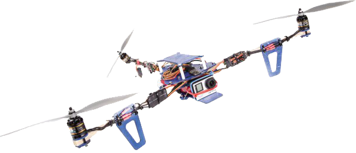
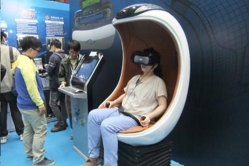
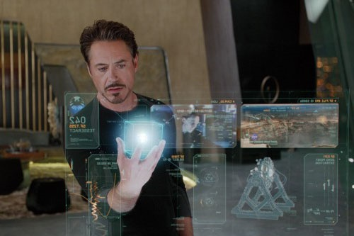
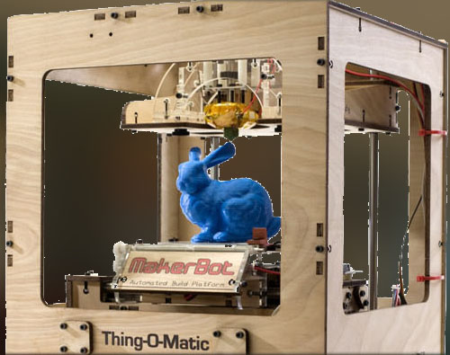

未來
創新
發想
探索
高科技與社會
Scroll Down
  
探索科技
看看現在的科技
想想幾年前還再用開闔式的手機?
科技是成長的如此快
或許再過幾年回頭看
智慧型手機可能如同智障一樣


現
代
未
來
思考科技
當科技越來越先進
是否該深思熟慮一番
科技對我們的影響?
科技會不會讓我們怠惰?
會不會讓我們失去些東西?
創新科技

3D列印
電腦建構3D模型，列印出來
隨著3D列印越來越火紅，許多不同材質的列印機也漸漸出現，像是列印金屬、木頭等。各種印應技術也隨之出現，如醫學用的模型、汽車外殼、甚至說是飛機機翼，以往模型不是以手刻就是用灌模的方式建置模型，現在只需要在電腦上繪圖，輸出檔案就可以列印出來，若3D技術更加成熟，必定可以省下大量成本。
大家肯定看過「看見台灣」這部電影，若也想自己拍出這樣的影片呢？那空拍機可以說是你的不二選擇，它不僅輕、便宜自由度非還非常高。一個好的空拍機會有各式各樣的配備，從基礎的攝影機、飛行用具到定位所需要的GPS，還有幫助飛行的飛行控制器，還有持久力夠高的電池，在選購空拍機前要問清楚才不會吃悶虧。
空拍機
號稱會飛的相機，自由度高
VR虛擬實境
讓人有如置身於虛擬環境內
在電腦等物品發明出來後，人們開始想把自己放進虛擬世界內，於是VR的雛型概念就出現了，各大廠商搶著要爭奪這個商機。在VR出現之後，許多軟體與遊戲也跟著這波潮流推出新產品，不僅是遊戲，連同影片、電影等也開始使用360度攝影的技術，讓VR使用者可以體驗身在影片中的樂趣。
未來世界
世界越來越方便，幾年前網路只能用來傳送小東西，現在呢?
我們變得不再想走路，移動身子，就如同電影-瓦力 中的人類一樣
在我們享受科技的當下，也應注意人際互動與身體健康